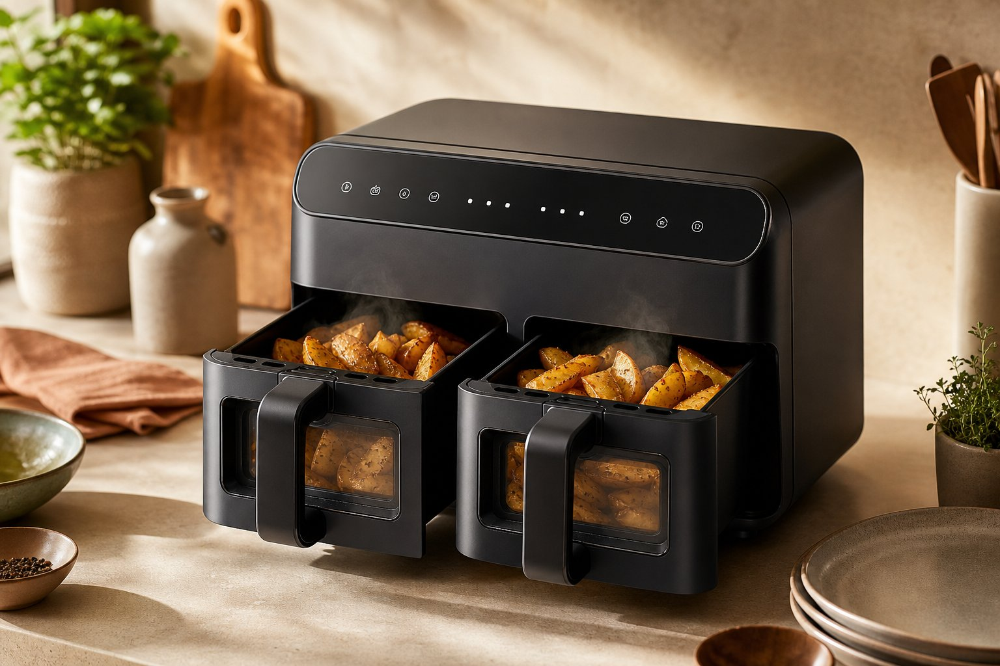

Air Fryers · Chefman
Two baskets, two windows, one finish time
Two baskets you can watch through the windows, timed to finish together. The question is not whether it fries — it is whether two 3-quart baskets fit the way you actually cook.
- Capacity
- 6 quarts combined (2 × 3-quart baskets; Measurements table says 6 liters)
- Temperature
- 200–450 °F
- Power
- 120 V / 1700 W
Best for two cooksTwo baskets
Why we picked it It is the only one here that can finish a main and a side at the same moment, which is the single most common weeknight problem air fryers are bought to solve.
Buy it if Cooked-for-two households that want a main and a side done at once
Skip it if Two small baskets instead of one big one; 450 °F max, and the listing's own capacity field says 6 liters why we say that